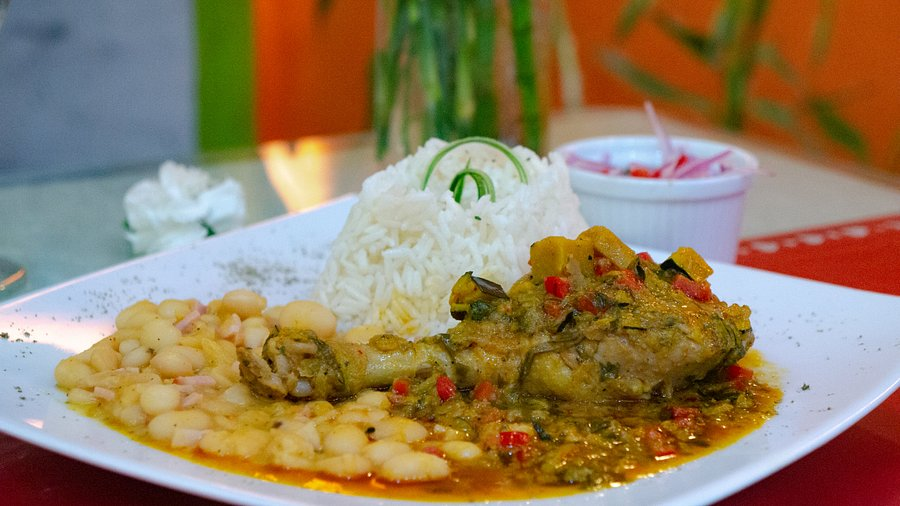
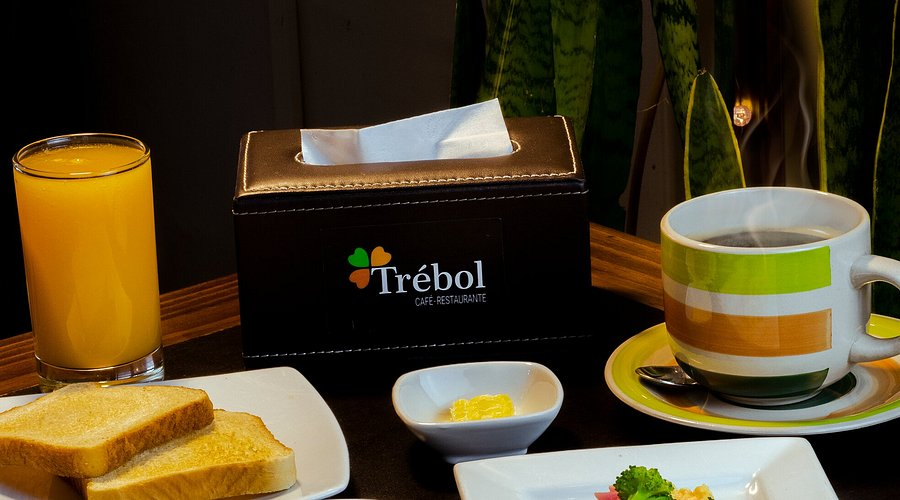
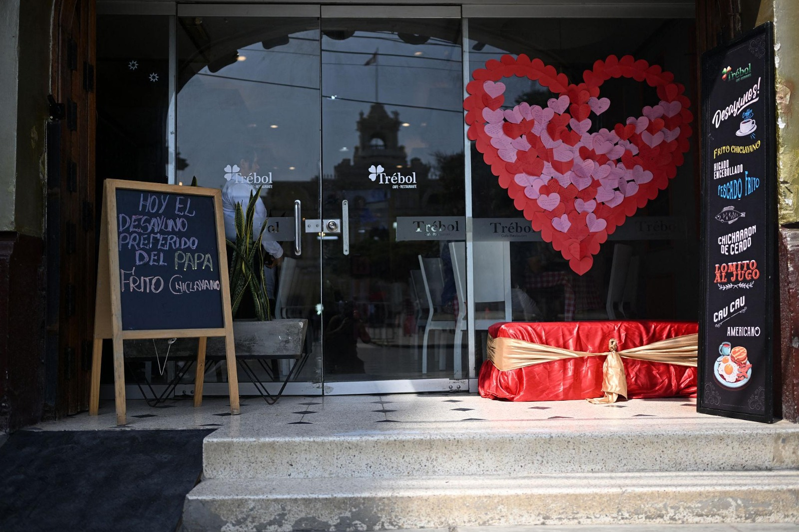

Tradición que trasciende fronteras
Desde Chiclayo, El Trébol se ha consolidado como un referente de la gastronomía norteña, destacando por la continuidad de recetas tradicionales y por su reconocimiento entre visitantes nacionales e internacionales.
Buen Diente

Pato estofado, macerado en loche, chicha y especias, tierno y lleno de sabor tradicional.
Las mesas se ocupan con rapidez y el movimiento no se detiene. Entre platos que llegan y conversaciones que se cruzan, el aroma de la cocina norteña se instala en el ambiente: arroz con mariscos, ceviche fresco y guisos tradicionales que conservan técnicas heredadas.
El Trébol, ubicado en Chiclayo, se ha consolidado como un punto de referencia de la gastronomía local, ofreciendo preparaciones basadas en recetas tradicionales de la región Lambayeque.
Origen familiar y continuidad
El restaurante surgió como un emprendimiento familiar impulsado por Eduard Montoya Altamirano, con el objetivo de preservar la cocina tradicional chiclayana en un espacio accesible para el público.
Con el tiempo, El Trébol creció sin perder su esencia. “Desde el inicio, la idea fue mantener los sabores tradicionales y que las personas se sientan como en casa”, señala su fundador.
Una visita que marcó su historia
Uno de los hechos más recordados del restaurante es la visita del papa Francisco, cuando aún era arzobispo, lo que aumentó su reconocimiento entre locales y visitantes.

Un espacio de encuentro
A lo largo de los años, El Trébol ha recibido a comensales de distintas procedencias. Turistas nacionales y extranjeros acuden al local como parte de su recorrido por Chiclayo, motivados tanto por la oferta gastronómica como por su reconocimiento dentro de la ciudad.

Identidad gastronómica
En un contexto donde la oferta culinaria se diversifica constantemente, espacios como El Trébol evidencian la permanencia de propuestas basadas en la tradición. Su continuidad responde no solo a la demanda, sino también al valor cultural que representa dentro de la ciudad.
“La tradición gastronómica vive en cada plato que respeta su origen y su historia”.